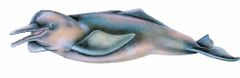

Inia geoffrensis
| Tonina del Orinoco | |
|---|---|
|  | |
| Riesgo de extinción | |
 Vulnerable (UICN) | |
| Clasificación científica | |
| Reino: | Animalia |
| Filo: | Chordata |
| Clase: | Mammalia |
| Orden: | Cetacea |
| Familia: | Iniidae |
| Género: | Inia |
| Especie: | Inia geoffrensis |
| Nombre binomial | |
|
Inia geoffrensis Blainville, 1817 | |
| Distribución | |
|
Mapa de distribución de Inia geoffrensis | |
Contenido
Información de Evaluación
- Categoría y Criterio Regional: Vulnerable A2cde
- Fecha de Evaluación Regional: 2015
- Evaluadores: Jesús Morales-Campos y Ariany García-Rawlins
- Categoría y Criterio Global: Datos Insuficientes
Justificación
Evaluaciones Previas
1999: Casi Amenazada (NT)
2008: Vulnerable (VU)
Información General
Nombres comunes
Tonina del Orinoco, tonina, tonina rosada, delfín rosado, bufeo colorado, boto, pink river dolphin.
Notas taxonómicas
Da Silva (1994) revisó la taxonomía del género y, con base en un análisis craneométrico, propuso dos especies: Inia boliviensis para la cuenca del río Madeira (Bolivia), e Inia geoffrensis para el resto del área de distribución, con dos subespecies: I. g. geoffrensis (cuenca del Amazonas) e I. g. humboldtiana (cuenca del Orinoco) (Da Silva, V. M. F. 1994). Recientes estudios morfométricos y moleculares (Banguera-Hinestroza et al. 2002, Martínez-Agüero et al. 2006, Ruiz-García et al. 2006a, Ruiz-García et al. 2007, Ruiz-García et al. 2008, Martínez-Agüero et al. 2010, Ruiz-García 2010a, Ruiz-García 2010b) confirmaron la existencia de las dos especies propuestas por Da Silva (1994) (Da Silva, V. M. F. 1994). Sin embargo, en dichos estudios no se encontraron evidencias de la existencia de subespecies bien definidas en el seno de I. geoffrensis. De hecho, Ruiz-García (2010a) mostró cómo en los ríos de la Orinoquia (ríos Orinoco, Bita, Inírida, Meta y Arauca) existen, al menos, dos linajes diferentes procedentes de la Amazonía. También, a diferencia de la hipótesis de Grabert (1984), el origen de Inia parece haberse producido en el océano Atlántico más que proceder del océano Pacífico, porque las poblaciones más antiguas se encuentran en la Amazonía central (Grabert 1984, Ruiz-García 2010a).
Sinónimos
Descripción
Inia geoffrensis es el cetáceo de agua dulce más grande del mundo. Alcanza longitudes de hasta 2,80 m y un peso de 180 kg. Su coloración es variable, generalmente cuando nace es de color gris oscuro y a medida que crece puede mantenerse igual o presentar una gran variación de gris a rosado (Trujillo, F. et al. 2006). De cuerpo robusto, hidrodinámico y muy flexible. El rostrum alargado, está provisto de cerca de 106 dientes y presenta vibrisas sensoriales que son más conspicuas en los juveniles. Sus ojos son pequeños pero funcionales, adaptados a las condiciones del agua turbia donde habita; el melón es pronunciado, de modo especial en adultos. Esta estructura sirve como un direccionador acústico de las ondas que producen (ecolocalización) para explorar su ambiente. Sus vértebras cervicales no están fusionadas, lo que les permite mover la cabeza de lado a lado; las aletas pectorales son grandes y con gran capacidad de movimiento; la aleta dorsal es baja y alargada (Trujillo, F. et al. 2006).
Distribución
I. geoffrensis se encuentra ampliamente distribuida en la cuenca del río Orinoco y en todos sus tributarios (Trebbau y van Bree 1974, Meade y Koehnken 1991, Linares 1998, Rodríguez, J. P. y Rojas-Suárez 2003, Linares y Rivas 2004, Bolaños-Jiménez et al. 2008, Herrera-Trujillo 2013), incluyendo el brazo Casiquiare (Pilleri y Pilleri 1982, Herrera-Trujillo 2013). Inia ha sido observada en la región del delta del Orinoco, Ciudad Bolívar, Caicara del Orinoco y Puerto Ayacucho, al igual que en los tributarios del río Apure (ríos Portuguesa, Guanare y Guaritico), Capanaparo, Cinaruco y Caura (Portocarrero-Aya et al. 2010), y en los ríos Cojedes, Sipapo, Autana, Cunucunuma, Ocamo, Ventuari, Raudales de Guajaribo y el caño Casiquiare (Herrera-Trujillo 2013, E. O. Boede obs. pers.). Aunque Trebbau y van Bree (1974), Romero et al. (2001) y Rodríguez y Rojas-Suarez (2003) no mencionan la existencia de barreras geográficas entre las poblaciones de la cuencas de los ríos Amazonas y Orinoco, es posible que tanto los raudales de San Gabriel de Cachoeira (Brasil), como los de Atures y Maipures (Venezuela), puedan actuar como barreras físicas que limiten el libre movimiento de los animales a lo largo de su área de distribución, originando tres poblaciones: 1) desde el delta del Orinoco hasta los raudales de Atures, 2) de los raudales de Maipures a San Gabriel de Cachoeira, y 3) en la cuenca amazónica (Rice 1998, Herrera-Trujillo 2013).
- Sistema: Dulceacuícola
- Bioregión:
- Intervalo altitudinal (m): Temporalmente sin información
- Endémica: No
Situación
El hábitat de esta especie puede ser considerado como amenazado en una gran parte de su extensión (Rodríguez, J. P. y Rojas-Suárez 2003). En particular es susceptible a la fragmentación del mismo por la construcción de obras hidroeléctricas; así también por el hecho de ser un carnívoro tope de la cadena alimenticia, razón por la que acumula en sus tejidos los químicos tóxicos vertidos en las aguas (Rodríguez, J. P. y Rojas-Suárez 2003). En apariencia la construcción de la represa de Guri en el río Caroní tuvo como consecuencia la reducción del tamaño de las poblaciones de la zona (Perrin y Brownell Jr. 1989). Esta especie es objeto de operaciones de turismo de avistamiento en su medio natural en regiones como el delta del Orinoco, ríos Apure, Caroní y Caura, así como en el Refugio de Fauna Silvestre de Caño Guaritico (Hoyt e Iñiguez 2008). En Colombia se le considera Vulnerable, con base en los criterios que refieren una obvia reducción observada, estimada, sospechada o proyectada en los últimos diez años (Trujillo, F. et al. 2006), calificación que se comparte en Venezuela. Estimados de densidad en diferentes ríos de la cuenca del Orinoco fluctúan entre 0,02 y 1,57 individuos/km2 (Portocarrero-Aya et al. 2010). De acuerdo con Gómez-Salazar et al. (2012), la población total de tonina rosada en la cuenca del río Orinoco se estima en unos 2795 individuos, de los cuales 1779 (64%) corresponden a Venezuela y 1016 (36%) a Colombia. Las mayores densidades se encuentran en las orillas del río, confluencias y lagos (Gómez-Salazar et al. 2012), siendo algunas de dichas confluencias más importantes las de los ríos Caura, Apure, Cinaruco, Meta y Ventuari con el Orinoco (Herrera-Trujillo 2013). A nivel global se considera en el nivel de Datos Insuficientes (Reeves et al. 2011).
- EOO (km2): Temporalmente sin información
- AOO (km2): Temporalmente sin información
- Tendencia Poblacional: Desconocida
Amenazas
Las principales amenazas conocidas que enfrenta Inia geoffrensis incluyen la alteración de su hábitat por construcción de represas, así como por contaminación de las aguas (a causa de la explotación minera y de hidrocarburos) y tráfico fluvial y muertes por interacción con pesquerías locales (Rodríguez, J. P. y Rojas-Suárez 2003, Bolaños-Jiménez et al. 2008, Herrera-Trujillo 2013). El mayor grado de amenaza en la cuenca para esta especie, se encuentra en el bajo Orinoco donde convergen todos los factores antes mencionados (Herrera-Trujillo 2013). Trujillo et al. (2005) encontraron evidencia importante de toxicidad por mercurio en varias especies de peces en la cuenca del Orinoco. Denuncias de capturas ilegales para su uso como carnada del bagre mapurite o zamurito (Calophysus macropterus) han sido investigadas por el Minamb (Bolaños-Jiménez y Hernández 1996, Portocarrero-Aya et al. 2010). Diniz (2011) estimó una captura anual de 40 toninas desde el inicio de la pesquería en Venezuela, en 1990, lo que significaría más de 800 individuos sacrificados hasta la fecha (Diniz 2011).
Conservación
En nuestro país Inia geoffrensis está vedada para la caza (Venezuela 1996a). Dado que la cacería ilegal es una de sus principales amenazas, se requiere de un importante incremento en las actividades de vigilancia y control ambiental. La existencia de operaciones de turismo dirigido hacia esta especie amerita medidas de conservación y manejo por parte de los ministerios del Poder Popular para Ecosocialismo y Aguas (en especial del Instituto Nacional de Parques), Educación Universitaria, Ciencia y Tecnología, y Turismo, en consulta con las partes interesadas, con el fin de garantizar que la actividad sea ejercida de manera sustentable. A los fines de la conservación de su hábitat, se recomienda la inclusión de la especie en los términos de referencia de los estudios de línea base, impacto socioambiental, investigación, monitoreo de impactos y planes de contingencia relacionados con operaciones petroleras en la cuenca del Orinoco, incluyendo esfuerzos especiales para el establecimiento de centros de rescate y rehabilitación en caso de derrames de hidrocarburos.
Autorías
Autores originales
Jaime Bolaños-Jiménez, Ernesto O. Boede, Arnaldo Ferrer-Pérez, Olga Herrera-Trujillo, Omar Linares, Marcela Portocarrero-Aya, Manuel Ruiz-García y Fernando Trujillo
Colaboradores
Ilustrador
Astolfo Mata
Referencias
- Banguera-Hinestroza, H., Cárdenas, H., Ruíz-García, M., Marmontel, M., Gaitán, E., Vázquez, R. y García-Vallejo, F. (2002). Molecular identification of evolutionarily significant units in the Amazon river dolphin Inia sp. (Cetacea: Iniidae). The Journal of Heredity 93(5): 312-322.
- Bolaños-Jiménez, J., Boede, E. O., Ferrer-Pérez, A., Herrera-Trujillo, O., Linares, O., Portocarrero-Aya, M., Ruiz-García, M. y Trujillo, F. (2015). Tonina del Orinoco, Inia geoffrensis. En: J.P. Rodríguez, A. García-Rawlins y F. Rojas-Suárez (eds.) Libro Rojo de la Fauna Venezolana. Cuarta edición. Provita y Fundación Empresas Polar, Caracas, Venezuela. Recuperado de: animalesamenazados.provita.org.ve/content/tonina-del-orinoco Lun, 19/03/2018 - 14:05
- Bolaños-Jiménez, J. y Hernández, O. (1996). Actividades de investigación sobre la presunta cacería ilegal de toninas (Inia geoffrensis) y delfín estuarino (Sotalia fluviatilis) en el Río Orinoco. Informe Técnico Ministerio del Ambiente y de los Recursos Naturales Renovables. Ciudad Bolívar, Estado Bolívar (mimeografiado).
- Bolaños-Jiménez, J., Linares, O. J., Portocarrero, M. y Trujillo, F. (2008). Tonina del Orinoco Inia geoffrensis Blainville 1817. Página: 113. En: Rodríguez, J. P. y Rojas-Suárez, F. (Eds.). Libro Rojo de la Fauna Venezolana (Tercera edición). Provita y Shell Venezuela S. A. Caracas, Venezuela, 332 pp.
- Da Silva, V. M. F. (1994). Aspects of the biology of the Amazonian dolphin genus Inia and Sotalia fluviatilis. PhD dissertation, University of Cambridge. 327 pp.
- Gómez-Salazar, C., Trujillo, F., Portocarrero-Aya, M. y Whitehead, H. (2012). Population, density estimates, and conservation of river dolphins (Inia and Sotalia) in the Amazon and Orinoco river basins. Marine Mammal Science 28(1): 124-153.
- Grabert, H. (1984). Migration and speciation of the South American Iniidae (Cetacea, Mammalia). Z- Säugetierkunde 49: 334-341.
- Herrera-Trujillo, O. (2013). Estatus de los delfines de río Sotalia sp. e Inia geoffrensis en la cuenca del Orinoco. Master en Biodiversidad en Áreas Tropicales y su Conservación, Trabajo Especial de Grado, Universidad Internacional Menéndez Pelayo. Quito, Ecuador. 101 pp.
- Linares, O. J. y Rivas, B. (2004). Mamíferos del Sistema Deltaico (delta del Orinoco-golfo de Paria), Venezuela. Memoria Fundación La Salle Ciencias Naturales 159-160: 27-104.
- Martínez-Agüero, M., Flores-Ramírez, S. y Ruíz-García, M. (2006). First report for the Major Histocompatibility complex (MHC) Class II loci from the Amazon Pink river dolphin (genus Inia). Genetics and Molecular Research 5: 421-431.
- Martínez-Agüero, M., Flores-Ramírez, S. y Ruíz-García, M. (2010). Amazon river dolphin polymorphism and population differentiation of MHC class II peptides. Chapter 7. Páginas: 117-130. En: Ruiz-García, M. y Shostell, J. (Eds.). Biology, Evolution, and Conservation of River Dolphins Within South America and Asia. Nova Science Publishers., Inc. Nueva York (Estados Unidos).
- Meade, R. H. y Koehnken, L. (1991). Distribution of the river dolphin, Tonina Inia geoffrensis, in the Orinoco river basin of Venezuela and Colombia. Interciencia 16(6): 300-312.
- Perrin, W. F. y Brownell Jr., R. L. (1989). Report of the Workshop on Biology and Conservation of the Platanistoid Dolphins. Páginas: 1-22. En: Perrin, W. F., Brownell Jr., R. L., Zhou, K. y Liu, J. (Eds.). Biology and Conservation of the River Dolphins. IUCN SSC Occasional Paper No. 3. IUCN, Gland, Suiza, 173 pp.
- Pilleri, G. y Pilleri, O. (1982). Zoologische Expedition zum Orinoco und Brazo Casiquiare 1981. Forschungsbericht. Ostermundigen (Bern): 154 pp.
- Portocarrero-Aya, M., Ferrer, A., Lasso, C. A., Ruiz-García, M., Bolaños Jiménez, J. y Caballero, S. (2010). Status, distribution and conservation of the river dolphins Inia geoffrensis and Sotalia sp. in Venezuela. 249 pp. En: Trujillo, F., Crespo, E., Van Damme, P. A. y Usma, J. S. (Eds.). The Action Plan for South American River Dolphins 2010 - 2010. WWF, Fundación Omacha, WDS, WDCS, Solamac. Bogotá, D. C., Colombia.
- Rice, D. W. (1998). Marine mammals of the world: Systematics and distribution. The Society for Marine Mammalogy. Special Publication, 4. 234 pp. Disponible en www.marinemammalscience.org.
- Reeves, R. R., Jefferson, T. A., Karczmarski, L., Laidre, K., O'Corry-Crowe, G., Rojas-Bracho, L., Secchi, E. R., Slooten, E., Smith, B. D., Wang, J. Y. y Zhou, K. (2011). Inia geoffrensis. The IUCN Red List of Threatened Species 2011. Disponible en www.iucnredlist.org/details/10831/0.
- Rodríguez, J. P. y Rojas-Suárez, F. (1999). Libro Rojo de la Fauna Venezolana, segunda edición. PROVITA, Fundación Polar. Caracas. 444 pp.
- Rodríguez, J. P. y Rojas-Suárez, F. (2003). Libro Rojo de la Fauna Venezolana (2a ed. reim.). Provita, Fundación Polar. Caracas. 472 pp.
- Rodríguez, J. P. y Rojas-Suárez, F. (Eds.) (2008). Libro Rojo de la Fauna Venezolana, tercera edición. Provita y Shell Venezuela, S. A. Caracas, Venezuela. 364 pp.
- Trebbau, P. y van Bree, H. (1974). Notes concerning the freshwater dolphin Inia geoffrensis (de Blainville, 1817) in Venezuela. Z. Säugetierkunde 39: 50-57.
- Trujillo, F., F., D., Diazgranados, M. C., Portocarrero, M., Gómez, C. y Pardo, D. (2006). Abundance estimation of strip and line transects. Primera Reunión Internacional sobre el Estudio de los Mamíferos Acuáticos SOMEMMA/SOLAMAC. 5 al 9 Noviembre. Mérida, Yacatán, México.
- Venezuela. (1996a). Decreto 1485: Animales Vedados para la Caza. Gaceta Oficial No. 36.059 - 7 de octubre de 1996. Caracas.